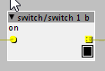

Hmm the CMSIS BasicMathFunctions look like they benefit a lot from function inlining, adding them to firmware destroys their performance for short vectors. I expect better performance by not using these functions than linking to them in firmware.
Great to hear you're working on faust-to-axoloti-objects!
How to code Axoloti objects
johannes
#42
thetechnobear
#43
i can see many functions in arm_math.h are inlined, but arm_float_to_q31 doesn't appear to be inlined?
Im also kind of assuming from the OP this would only be called at the interface between faust code (which uses floats) and axoloti... i.e. hopefully not being hit repetitively.
I guess more generally the question could be framed...
when users are writing/porting stuff, quite often they will use floats ... so how do you recommend they convert them to the int32 axoloti representation... is there already a firmware function (or header file for inline function) to do this... would seem useful. (I think we need a signed and unsigned variants, and obviously in both directions)
(this assumes that they dont want to rewrite the code, for whatever reason, to use int32 representation natively... which might be more efficient)
johannes
#44
I guess it is assumed that the vector is long, then it does not make a significant difference. Or link-time optimization could still inline it even without hints.
hmm there is ConvertFloatToFrac() in axoloti_math.h but nothing backwards, will add that. Oh and ConvertFloatToFrac uses -64.0 to 64.0 float range, you probably want -1.0 to 1.0....
Scaling may actually not be needed if the processing is purely linear.
philoop
#46
the new object editor is very good, altough i cant make no changes to overview, nor edit xml.
I guess this will updated...
so i gave it a try and coded my first object, a switch.switch 1 b.axo (625 Bytes)

I created a new folder "switch" in home/objects and put it in there......it works, but could somebody please check the code? did i do it right? thank you !
ps. i wonder why objects are sometimes big, othertimes small.....
johannes
#47
outlet_o= (param_b)?inlet_i1:param_b;
looks fine but I think the equivalentsoutlet_o= (param_b)?inlet_i1:0;
or outlet_o= param_b && inlet_i1;
are a bit easier to read.
You mean the visual layout? Partially because it stretches to the object name, but there is a issue I have not yet understood. On the slightly longer term I intend to define coordinates for the inlet/outlet/parameters... in the object file, so object can have a free layout. This needs to be implemented with care for zooming in/out on patches, and once this settles it becomes harder to develop changes to parameters that have an impact on the visual representation, since all objects 'd need to be updated...
thetechnobear
#48
+1 on this, I've been using it quite a lot today...
if your a C/C++ programmer, the editor along with patcher/object opens are some really cool ways to debug things, since its trivial to code up test conditions etc.
thetechnobear
#50
you mean editor?
I used to just edit the XML files in vi,
but now with 1.0.7 I'm using the editor, its not totally complete, but its particular good for writing one off code or stuff thats overly complex to do graphically (e.g. complex expressions)
for stuff editor doesn't cover, I go back to vi on the AXO file.
- I'll point out, if Ive got a lot of code, (like i did the the push object) then I move the code in to separate C files which I then include.
if your 'hacking' existing objects then theres two options:
open the original and then do Save As... (make sure you don't just do save and overwrite factory objects, that'll confuse your life )
the other cool option is 'convert to embedded object'... I've not used this yet, but I think could be a good workflow... convert to embedded, hack it to work as you want, then if its generally useful, Save As... ( note: embedded objects only really work well, if the editor covers what you need)
EDIT: side note, for the factory objects there is a 'code generator', so the objects are written inside some java files, then the axo's are generated, so stuff I did for the factory, I do that way - so the factory axo never get edited directly.
(no, the code generator is not really, generic... or worth using for non-factory objects, its 'advantage' is if something radical changed, but these days Id guess thats unlikely as to do so would break others axo/patches)
thank you, not a coder by trade but trying to learn what i can regarding custom objects.
maybe im misunderstanding something in the most simple way, but in regards to custom objects - is it as simple as editing an XML file (safely and w/o disturbing factory .axo) and then saving?
does the patch editor generate the C code based on the XML settings?
just trying to add some modulation to a custom env-ad object 
thetechnobear
#52
the simplest way, now would be using the object editor within axoloti (edit Object Definition on context menu),
just be sure if its a factory object to save it elsewhere first (and with a different name) , so you dont accidentally overwrite (or do convert to embedded) ,
the reason to use the object editor, is there are a few other fields like uuid/sha that also need to be generated, so if you create things outside of the object editor you have to do this 'manually'
yes, the object editor will insert the code into the XML.
if you add params/inlets/outlets, it will also add the relevant code to the XML.
the xml is shown 'for reference' as its what is generated, and placed in the axo.
really appreciate all the information and help. hopefully ill be able to contribute to this project in a more meaningful way, but here's an edited version of the env_ad object that has mod inputs for attack and decay (i love having control over as many parameters as possible)
also included a patch ive been working on that includes some subpatches from the forums, really good stuff around here!
same here, im assuming thats probably incorrect but works just fine for me
wp_ad_mod.axo (1.5 KB)
21516.axp (28.7 KB)
rvense
#54
That convert to embedded object thing is a stroke of genius. The editor in general takes this software to a whole new level if you know or want to learn how to code, I think.
philoop
#55
ok its really fun to code with the object editor ..although the xml editor doesnt work for me...
but i have a problem with duplicate shas now...axo says
search path : C:\Users\Philoop\Documents\axoloti\objects
Duplicate SHA! C:\Users\Philoop\Documents\axoloti\objects\ctrl\1-16.axo
Original name: ctrl/i
Path: C:\Users\Philoop\Documents\axoloti\axoloti-factory\objects\ctrl\i.axo
i wonder they have diffrent names etc.. i only changed min max value and that doesnt change the sha.......
philoop
#56
also i have serious problem with slashobject....while using the editor it logically changes its uuid/sha now i am left with
Incorrect uuid hash detected for object: C:\Users\Philoop\Documents\axoloti\axoloti-factory\objects\patchSLASHobject.axo , does not match its signature (bb87360199938d53d1183cdc80947ed0a39e3c9a). True signature would be c74c8d087391f1b0ff386aa2f75f2fcb0bc303e6
Duplicate UUID! C:\Users\Philoop\Documents\axoloti\axoloti-factory\objects\patchSLASHobject.axo
Original name: mix/xfade
Path: C:\Users\Philoop\Documents\axoloti\axoloti-factory\objects\mix\xfade.axo
wich is causing my patch of yesterday not to go live......after initing the factory, its okay again, but i guess i have to do it everytime?
anon5189335
#57
Hey @philoop
I have the exacts same problem with that object. I have succesfully made a few other objects with no conflicting sha or UUID, but the new versions of the ctrl/i keeps conflicting with the original. They work, but they keep coming up red in the log. I followed same procedure as when I made other like divremc with 1024 values instead of 128. That works perfectly. Havent found out what the issue is yet. Gonna try and make a new version again and see what happens.
I might add that I didnt use the internal editor, but Text Wrangler to do this.
anon5189335
#60
Ok, made a new version. BUt still conflicts.
UUID is ok. Axoloti suggest a new UUID and that works. But it also says Sha and upgrade sha has duplicates:
Duplicate SHA! /objects/ctrl/1-15.axo
Original name: ctrl/i
Path: /Applications/Axoloti.app/Contents/Java/objects/ctrl/i.axo
Duplicate upgrade SHA! /objects/ctrl/1-15.axo
Original name: ctrl/i
Path: /Applications/Axoloti.app/Contents/Java/objects/ctrl/i.axo
Ufortunatly I dont get any suggestion for sha or upgrade sha. So I tried just changing it manually and then I get this error:
Incorrect sha hash detected for object: /objects/ctrl/1-15.axo its implementation does not match its signature. Correct SHA hash would be b26fac2d686e81abd981a2cb0d2dd3ea2dfba53a
...... the suggested sha is the same as the original ctrl/i uses, so it cannot be used. So I am also stuck on this. Thought that using the internal editor might help , but seems like it is the same for you.
thetechnobear
#61
I think we have to take a step back, and you need to describe what you doing....
to 'fix' these issues we need to be able to reproduce the error
(I've been using patch/object lots, and not had an issue)
can you re-init the factory library...
then confirm that you don't have any issues.
then describe what you are doing, to create this error.
are you trying to do 'save as' by any chance?
I've a strong suspicion I know whats going on, but I really need to understand the precise steps you are taking to get into this state.
@johannes, Im thinking of changing save as on the object editor entirely, basically changing into an 'add to library', I think this will probably solve the inherent problems with the above. I'll PM you.